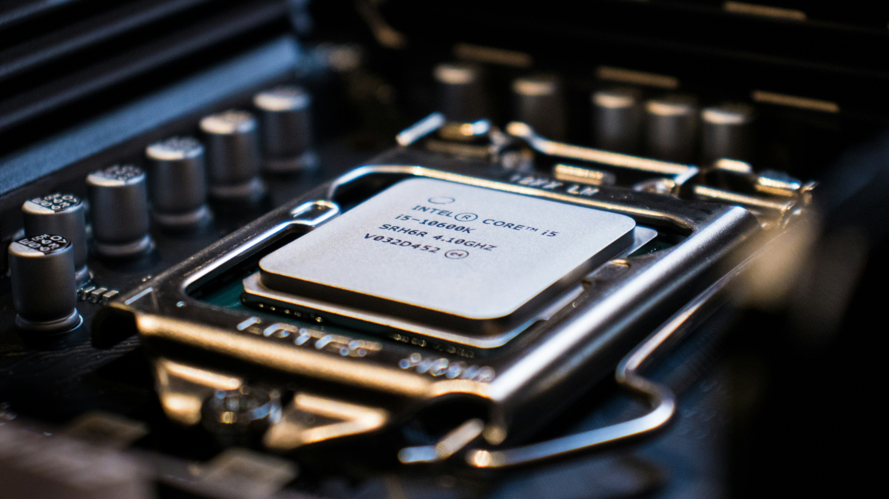
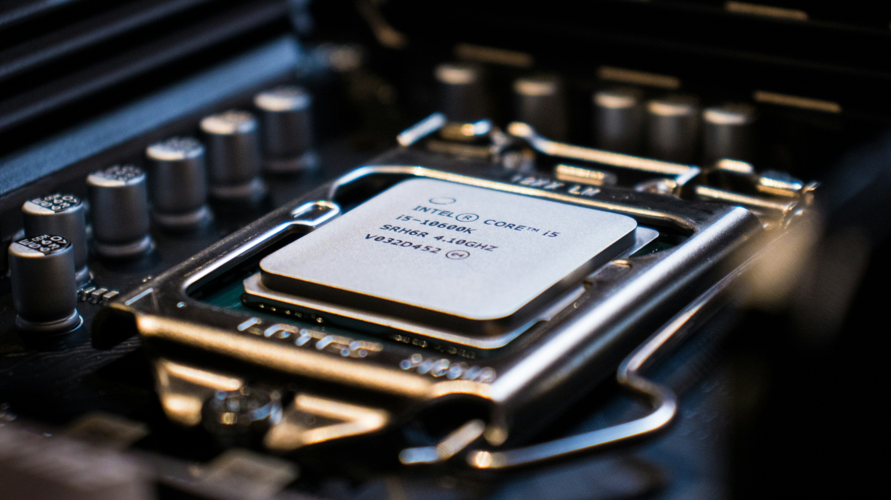

CPU
Hur fungerar CPU:n?
CPU:n följer en process som kallas fetch-decode-execute-cykeln. Detta innebär:1. Hämta (Fetch): CPU:n hämtar instruktioner från datorns arbetsminne (RAM). Dessa instruktioner är kodade i maskinspråk och är en serie av binära tal som representerar olika operationer.
2. Avkoda (Decode): Instruktionen avkodas av CPU:n för att förstå vilken åtgärd som ska utföras. Här används kontrollenheten (Control Unit) för att tolka instruktionen och förbereda den för exekvering.
3. Utföra (Execute): Den avkodade instruktionen utförs av den aritmetiska-logiska enheten (ALU, Arithmetic Logic Unit). Detta kan inkludera matematiska operationer som addition eller multiplikation, eller logiska operationer som jämförelser.
CPU:ns Huvudkomponenter
Kontrollenhet (Control Unit): Ansvarar för att styra och koordinera alla processer i CPU:n. Tolkar instruktioner och skickar signaler till andra komponenter för att utföra uppgifter.
Aritmetisk-logisk enhet (ALU): Utför alla matematiska och logiska operationer. Används för att bearbeta data och fatta beslut baserade på logiska jämförelser.Register: Små, snabba lagringsenheter inuti CPU:n som används för att lagra data temporärt under processens gång. Exempel inkluderar ackumulatorn (ACC) och programräknaren (PC).
Cache-minne: Ett litet, snabbt minne som används för att lagra ofta använda data och instruktioner, vilket minskar tiden det tar att hämta information från RAM.
Vilken roll spelar CPU:n i en dator?
CPU:n är ansvarig för att bearbeta alla instruktioner som krävs för att köra program och systemprocesser. Den hanterar allt från enkla operationer som att flytta data till komplexa beräkningar för att rendera grafik i spel. CPU:ns prestanda påverkar direkt datorns hastighet och förmåga att hantera flera uppgifter samtidigt.* Multitasking: Moderna CPU:er har flera kärnor (multi-core), vilket gör det möjligt att bearbeta flera uppgifter parallellt. Exempelvis kan en fyrkärnig CPU hantera fyra separata processer samtidigt.
* Hastighet: CPU:ns hastighet mäts i GHz (gigahertz), som anger hur många miljarder cykler den kan utföra per sekund. En högre hastighet innebär snabbare bearbetning.
 
